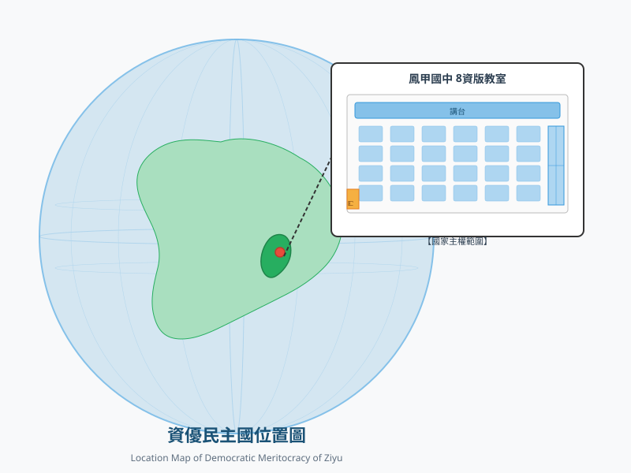
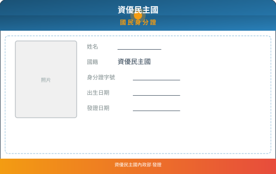
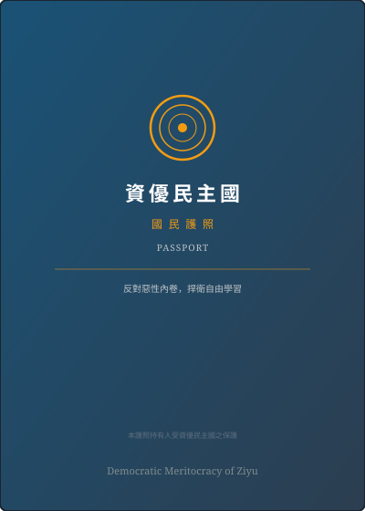

資優民主國成立於中華民國115年5月28日，由資優班全體人民基於共同意志， 以「反對惡性內卷，捍衛自由學習」為立國終極核心所建立。國家主權屬於資優班全體人民， 實施憲法保障發呆與自主思辨之神聖基本人權。
國家元首
總統：蘇◯旭
國家信仰
唯一真神：廖◯茹
領土範圍
鳳甲基地及各直轄特區
和平狀態
已停戰（和平協定生效）
運作指標 ⚡
國家關鍵統計 📈
近期要聞公報 📢
資優民主國落實「主權在民、透明施政」之立國精神，全面公開國家關鍵發展指標。 以下儀表板由國家數據庫結合 D3.js 資料視覺化引擎 即時繪製，提供全國國民公開查驗憲法條款與施政方針之認同滿意度。
憲法滿意度與施政認同儀表板 🗳️
基於全國國民匿名民調與常態意見回饋之大憲章各條款支持度
連續三個月獲評「極高認同度」
- 宣告建國：全體人民正式奠定立國根基，拒絕填鴨式教育壓迫。
- 實施內卷管制：發布《資優民主國內卷特殊條例》，保障國民適性發展。
- 資優民主黨創立：國內核心政黨組建，引領國家反內卷事業。
- 防諜措施：發布反滲透管制法規，抵禦卓越人民共和國干擾。
- 首屆總統直選：蘇泳旭同志以8票絕對優勢當選首任國家元首。
- 大憲章制憲：國家正式步入民主法治憲政框架，保障國民言論與自主探索權。
- 對外宣戰：因應境外威脅，正式對「卓越人民共和國」進入全面交戰狀態。
- 根本大法確立：資優民主國憲法第一版經制憲大會一致決議通過。
- 戰亂臨時條款：全面進入戰備狀態，部分內卷特殊條例及法規暫時停止適用。
- 領土保衛：實施嚴密走廊管制與座位防區巡防，驅逐不法刺探機密之越界者。
- 憲法修正案：制憲大會正式通過「法律不溯及既往原則」寫入根本大法第十條。
- 制度健全：確立罪刑法定與人權保障，成為微國家法治之典範。
第一條（國體與主權）
資優民主國基於資優班全體人民之共同意志，為一民主與中央集權兼具之特殊憲政政體。其主權屬於資優班全體人民。
第二條（國土與治權）
資優民主國之領土，暫以資優班教室及其延伸之學習活動空間為統治權實施範圍。
第三條（實政體制）
本國於非常時期或建國初期，得實施一黨專政體制，由「資優民主黨」全面領導國家發展，以維護班級紀律與學習秩序。
第四條（平等原則）
資優民主國人民，無分性別、座位、智商或入學成績，在法律上一律平等。
第五條（自由權之保障與限制）
人民之言論、講學、著作及出版自由應予保障。但其言論若涉及惡性內卷、破壞和諧或引發學業焦慮者，受特殊法律之限制。
第六條（應考試與受教育之權利義務）
人民有依班規及教師指示接受測試與參與各項學術競賽之權利與義務。
第七條（總統之職權與產生）
總統為國家元首，對外代表資優民主國，對內統率國家各項事務。
一、總統由人民直接選舉產生，候選人須獲得法定有效票數方得確認當選。
二、總統有明令公布法律、發布緊急命令以及對卓越人民共和國宣戰之權。
第八條（憲法之修改與最高性）
本憲法為資優民主國之根本大法，任何班規或條例與本憲法牴觸者無效。憲法之修改，須經總統核准，並經資優班立法委員過半數之同意，始得變更。
第九條（施行日期）
本憲法自公布之日起發生效力。
第十條（不溯及既往原則）
本憲法及依本憲法所制定之各項法律條例，其適用以法律生效後之行為為限。除法律另有特別規定或有利於行為人者外，行為於法律實施前不予追究處罰。
反滲透管制條例
防範境外敵對勢力「卓越人民共和國」之滲透、分化與刺探機密行為，嚴禁非法越界與通敵交易。
憲法內卷管制特殊條例
嚴懲一級至三級惡性內卷罪，禁止教唆販賣刷題資料與團體內卷，確立適性減壓輔導教育。
妨害風化管理處罰條例
平衡個人自由與公共秩序，強化兒少絕對保護，兼顧學術與藝術創作正當免責事由。
學習與教育內卷處罰條例
全面杜絕畸形刷題與無效證照軍備競賽，嚴禁公佈英雄榜，法制化保障「發呆課」與「白日夢時間」。
👑 國家元首及精神
- 國家元首 總統：蘇◯旭
- 副元首 副總統：（從缺）
- 精神引領 唯一真神：廖◯茹
⚖️ 五院最高首長
- 最高立法機關 立法院長
- 最高行政機關 行政院長
- 最高司法機關 司法院長
🏢 行政院核心部會
- 國土與戶籍 內政部長
- 國際交流與建交 外交部長
- 學習自由保障 反內卷專責委員會
👥 民意代表機關
- 民意代表 全體立法委員
- 職責 審查法律、預算與宣戰動員案
- 組成 全體資優班推派民意代議士

國家主權領土實施範圍
依據憲法第二條規定，資優民主國之統治權目前包含教室核心領土、走廊邊防陣線，以及各直轄學習特區。
- 首都核心：鳳甲國中 8年級 資優班教室
- 邊防緩衝區：教室前後門走廊及公共穿堂防線
- 專屬研究特區：科學實驗室、電腦教室直轄領空
- 防空避難所：自主發呆專用多功能思考角
成為資優民主國正式國民
歡迎加入資優民主國！無論是個人或整個班級，只要認同「反對惡性內卷，捍衛自由學習」之憲政理念， 皆可申請入籍，審核通過後即獲發正式身分證與國民護照。
✨ 國民享有之神聖權益
- 人權保障：享有憲法保障之平等權與自由權，免受同儕排名焦慮侵害
- 參政權利：直接參與國家總統大選與各項公民投票決議
- 法定特權：憲法保障「發呆課」與「白日夢時間」為不可剝奪之核心人權
- 法規庇護：受《反內卷條例》保護，免受惡性刷題作業侵擾
📜 審核通過後核發之法定證件
團體班級：資優民主國班級身分證 + 班級公務護照
一般國民：資優民主國國民身分證 + 國民護照
官方入籍線上申請通道
點選下方按鈕填寫 Google 官方表單，由內政部審核通過後正式建檔。
✍️ 立即填寫入籍申請表 → 🔒 🪪 前往國民管理系統 (需管理密碼) →資優民主國 國民身分證 樣式

資優民主國 國民護照 封面樣式

資優民主國 國際建交大會
資優民主國致力於在國際微國家社群與青年自治領域建立平等、和平、反內卷之夥伴關係。 不論貴國領土位於何處，只要尊重多元、守護自由學習，我們誠摯歡迎遞交建交照會！
🕊️ 和平共處與領土尊重
互相尊重主權與教室領土完整，互不侵犯，互不干涉彼此課堂自治內政。
🛡️ 反內卷共同防禦協定
共同抵禦刷題作業主義滲透與排名焦慮，互相給予精神慰藉與安全避風港。
🔬 學術與創意互惠
促進自製微型專案、發呆哲學思考、藝術創作與課後非功利嗜好交流。